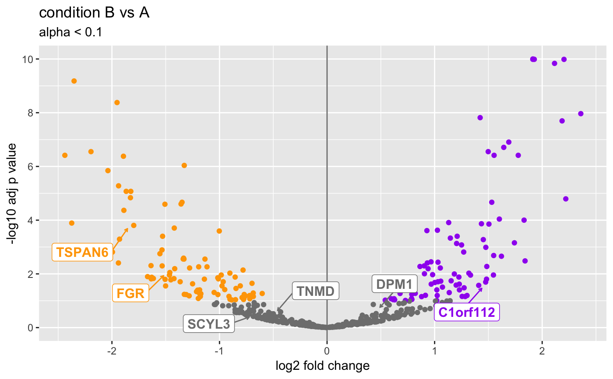
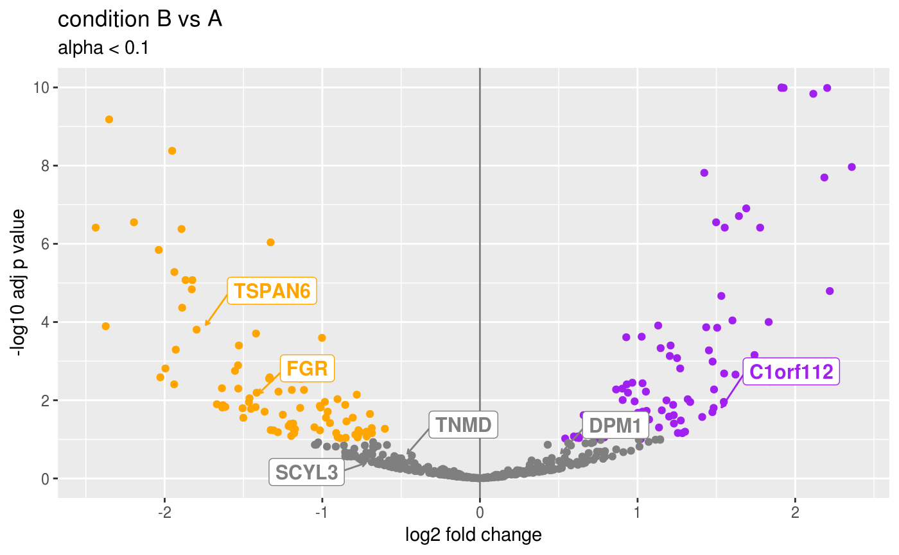

Plot Volcano
# S4 method for DESeqResults plotVolcano(object, ylim = 1e-10, genes = NULL, gene2symbol = NULL, ntop = 0L, direction = c("both", "up", "down"), pointColor = "gray50", sigPointColor = c(upregulated = "purple", downregulated = "orange"), histograms = FALSE, return = c("ggplot", "DataFrame")) # S4 method for DESeqAnalysis plotVolcano(object, results = 1L, lfcShrink = TRUE, ylim = 1e-10, genes = NULL, ntop = 0L, direction = c("both", "up", "down"), pointColor = "gray50", sigPointColor = c(upregulated = "purple", downregulated = "orange"), histograms = FALSE, return = c("ggplot", "DataFrame"))
Arguments
| object | Object. |
|---|---|
| ylim |
|
| genes |
|
| gene2symbol |
|
| ntop |
|
| direction |
|
| pointColor |
|
| sigPointColor |
|
| histograms |
|
| return |
|
| results |
|
| lfcShrink |
|
Value
ggplot.
See also
This method is an updated variant of
CHBUtils::volcano_density_plot().
Examples
data(deseq) object <- deseq print(object)#> DESeqAnalysis 1.22.1 #> transform: vst #> contrastNames: condition B vs A #> class: DESeqDataSet #> dim: 500 12 #> metadata(3): version date interestingGroups #> assays(4): counts mu H cooks #> rownames(500): gene001 gene002 ... gene499 gene500 #> rowData names(27): geneID geneName ... deviance maxCooks #> colnames(12): sample01 sample02 ... sample11 sample12 #> colData names(2): condition sizeFactor## Get genes from DESeqDataSet. dds <- as(object, "DESeqDataSet") g2s <- Gene2Symbol(dds) geneIDs <- head(g2s[["geneID"]]) print(geneIDs)#> [1] "ENSG00000000003" "ENSG00000000005" "ENSG00000000419" "ENSG00000000457" #> [5] "ENSG00000000460" "ENSG00000000938"geneNames <- head(g2s[["geneName"]]) print(geneNames)#> [1] "TSPAN6" "TNMD" "DPM1" "SCYL3" "C1orf112" "FGR"plotVolcano(object)#>## Customize the colors. plotVolcano( object = object, pointColor = "black", sigPointColor = "purple" )#>plotVolcano( object = object, sigPointColor = c( upregulated = "green", downregulated = "red" ) )#>## Directional support (up or down). plotVolcano( object = object, direction = "up", ntop = 5L )#>plotVolcano( object = object, direction = "down", ntop = 5L )#>## Label genes manually. ## Note that either gene IDs or names (symbols) are supported. plotVolcano(object, genes = geneIDs)#>plotVolcano(object, genes = geneNames)#>